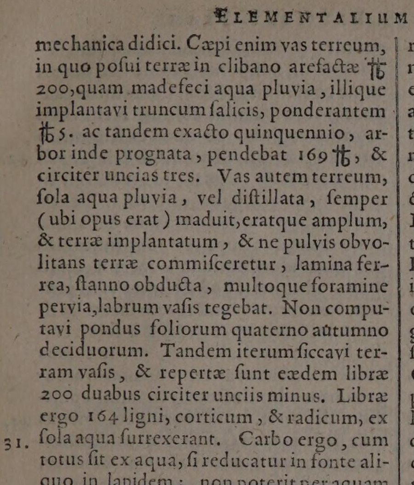
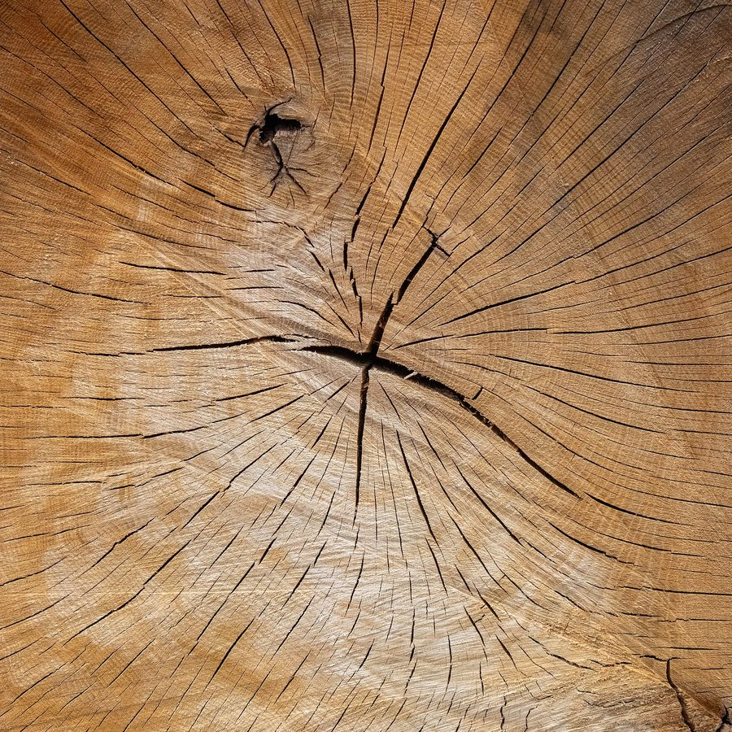
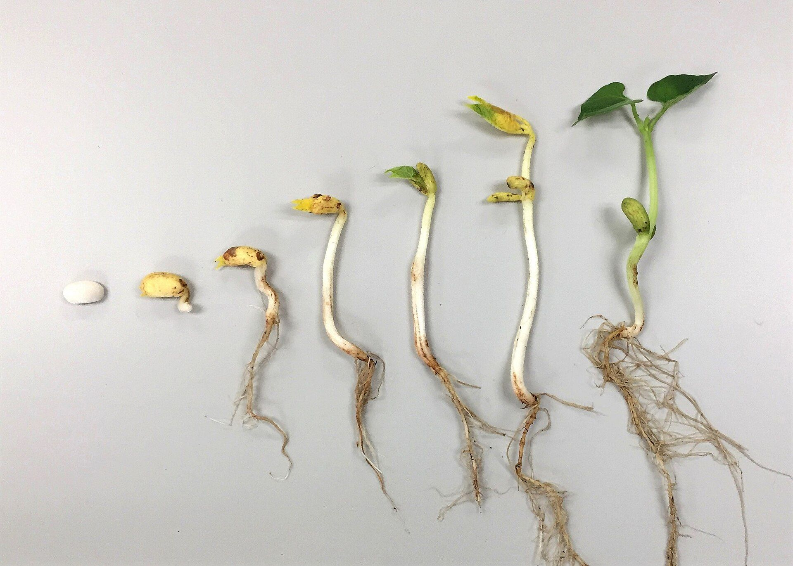
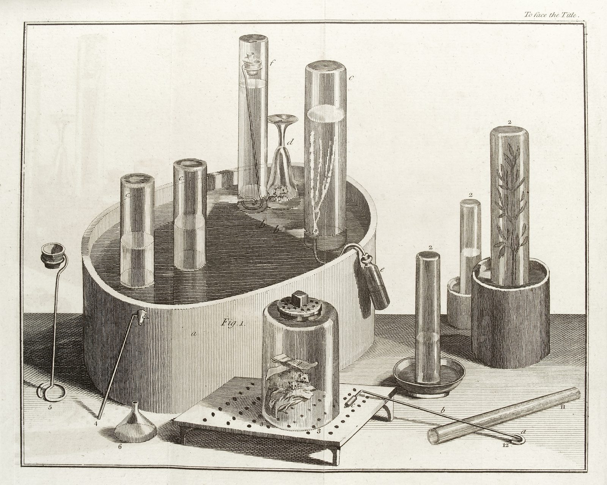
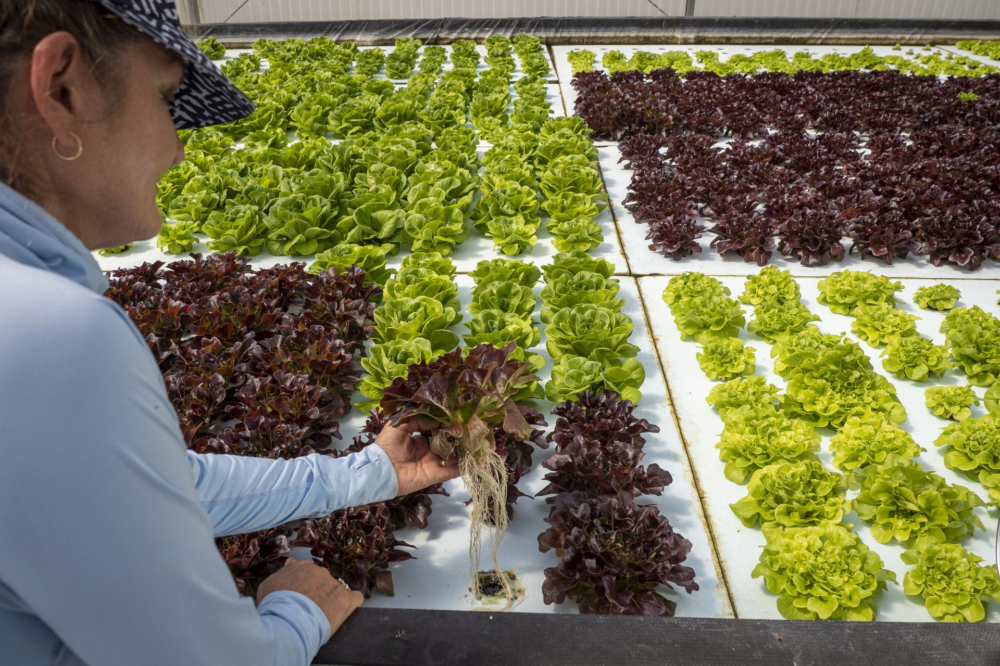
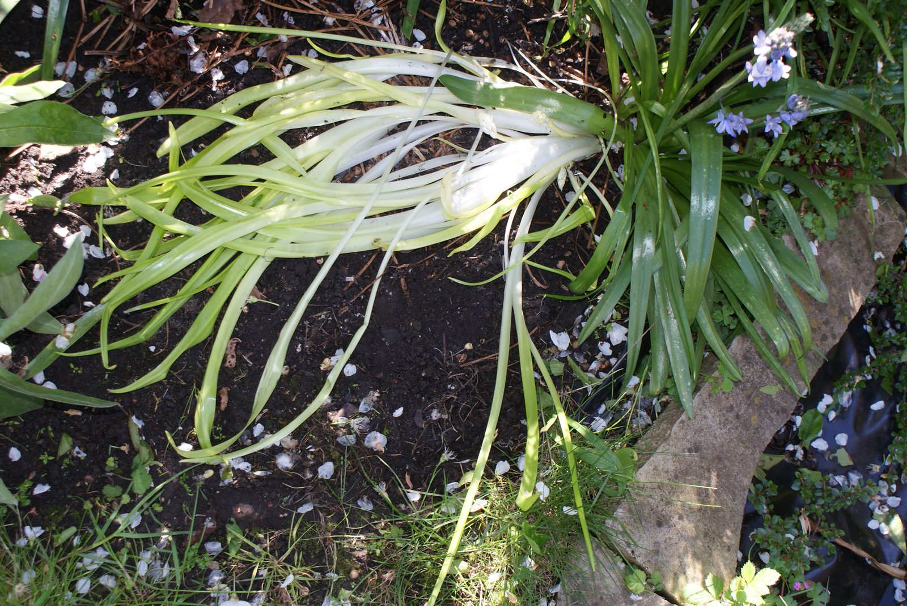
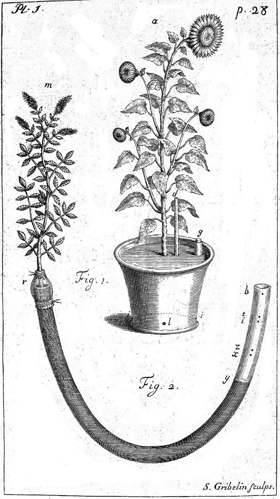

Hello, families! This week your child takes on one of the oldest questions in plant science: a tiny seed grows into a giant tree, so where does all of that wood come from? Most people guess the soil. Your child will read the real notebooks of scientists who tested it, run their experiments on the page, and then argue the answer with evidence.
How the Lesson Pages Work
Each lesson page has four steps, in order. A button at the bottom of each one moves to the next.
- 🎬An opening film. Each lesson starts with a short film (about a minute, sound on) that zooms through real photos, from space down to a leaf, and ends on the lesson’s question.
- 🔊Listen buttons. A narrator reads short “Listen” cards that explain each game. There is also a Listen button at the top that reads the page aloud, with a speed control.
- 🎮A game in every part. Your child taps, sorts, slides and predicts. The games use real data from real experiments.
- 🔎Optional extras. Some parts have a fold-out box marked Optional: real NASA footage, real carbon dioxide data, or a 3D museum fossil. They’re for curiosity, not for a grade.
- 📋Everything is gathered at the end. The Assignment collects your child’s typed answers in one box. Copy it into Canvas to turn it in.
- 📓A notebook page to keep. The “Download my notebook page” button makes a printable page with your child’s answers, photos and sketch.
Handy to have nearby: a science notebook, a pencil and colored pencils. A houseplant or a leaf to look at is optional.
The Notebook Chain
How 5th Grade Science works this yearEvery page in the Notebook Chain was written by a scientist who tested an idea. Scientists build on each other’s notebooks: one writes a page, and the next one picks up where it left off. Each week your child reads a real page, checks the evidence, and then adds a page of their own. Over the year the chain grows to 30 pages.
In Part C of each Assignment, your child writes the next page: what the scientist did well, what they missed, and a question they would ask. The chain at the bottom of the page shows where your child’s page fits.
What Materials Do Plants Need to Grow?



The lesson’s big questionA tiny seed grows into a giant tree. Where does all of that wood come from?
The scientist on this page
Jan Baptist van Helmont, who lived near what is now Brussels, Belgium. He planted a 5-pound willow in 200 pounds of dried soil and gave it only rainwater for five years. The tree grew to 169 pounds. The soil lost only about 2 ounces. He decided the tree came from water alone. His numbers were careful and correct. His idea missed the air.
What your child does
- Warm-Up · Slice the tree. A real tree-trunk slice is cut into 10 pieces. Your child fills each piece with Soil, Water, Air or Sunlight to predict where the willow’s 164 new pounds came from, and writes one reason.
- Part 1 · Van Helmont’s own words. The real 1648 page, in Latin. Tapping a line reads it in plain English. Your child hunts for the line where he admits what he didn’t weigh (the leaves that fell each autumn) and the line where he says what the tree was made of.
- Part 2 · Can air have mass? Pump air into a ball on a kitchen scale and watch the number go up. Air is matter, so it has mass, and so does the carbon dioxide in it.
- Part 3 · Is fertilizer really plant food? Read a “plant food” label. A 20-pound bag holds only about 6 pounds of nutrients. Nutrients are like vitamins for a plant, not the main meal.
- Part 4 · Run the five years. Drag a slider through van Helmont’s experiment, read his scales, and work out the changes (164 pounds gained, about 2 ounces lost). Then your child compares their prediction with the evidence: about half the new weight came from water, about half from carbon dioxide in the air, a pinch from soil, and none from sunlight. Sunlight is energy, not matter.
What your child learns
- Plants get most of their material from air (carbon dioxide) and water, not from the soil.
- Leaves take in carbon dioxide through tiny openings called stomata. Roots take in water. Sunlight gives the energy to join them into sugar, and the plant builds its body from that sugar.
- Soil still matters: it holds the plant up and supplies small amounts of nutrients.
- Plants are producers: they make their own food. Animals can’t.
- Good scientists can measure carefully and still miss something. That’s why the chain keeps going.
Optional extras
Words
- organism
- carbon dioxide
- water
- leaves
- roots
- producer
What to turn in
- Warm-Up: the tree prediction and one reason.
- Part B: two questions in complete sentences (what fertilizer really does, and why plants are called producers).
- Part C: the notebook page: what van Helmont did well, and what he missed.
- C-E-R: a claim, at least two pieces of evidence, and reasoning.
Ask at dinner
“If a tree doesn’t eat dirt, what is it made of?” (Listen for: mostly carbon dioxide from the air and water. Van Helmont’s tree gained 164 pounds while the soil lost only about 2 ounces.)
Try at home
If you have a bag of fertilizer or “plant food,” find the three numbers on the label together. Add them up. That’s how many parts out of 100 are nutrients. Is it the plant’s main meal, or more like vitamins?
Argument from Evidence: Plant Growth Materials



The lesson’s big questionThree different experiments, done in three different ways. Can they all point to the same answer about where a plant’s mass comes from?
The scientist on this page
Joseph Priestley, an English scientist. On August 17, 1771, he put a sprig of mint into a jar of air where a candle had burned out. On August 27, a new candle burned perfectly well in it. A jar of the same air with no plant stayed spoiled for months. He read his report to the Royal Society in London in 1772. His page never says whether the jars sat in the light, and that becomes next week’s question.
What your child does
- Warm-Up · Be the judge. A full-grown lettuce: how many cups of soil did it use up? Your child predicts with a slider and writes a reason. (The answer, in Part 3: none. It grew in water.)
- Part 1 · Priestley’s own words. The real 1772 page, read in plain English. Your child sorts four of his sentences into Claim or Evidence, then picks the reasoning he never wrote down.
- Part 2 · Run Priestley’s jars. Predict, then test: burn out the candle, add the mint to one jar, wait ten days, and test both jars.
- Part 3 · Hear the other side. Three things people really say, like “Plants eat soil.” Your child answers each one with the evidence card that fits.
- Part 4 · Test the last two witnesses. A plant sealed in a jar with a carbon dioxide meter: in the light, the carbon dioxide drops; in the dark, it stops falling and slowly creeps back up. Then two trays of bean seedlings, one in sunlight and one in a dark box. The dark ones turn pale and stop gaining mass, even with water.
The three witnesses
A · Van Helmont’s willow. Gained about 164 pounds; the soil lost about 2 ounces.
B · The dark box. Plants in the dark stop gaining mass.
C · The sealed jar. In the light, a plant pulls the carbon dioxide way down.
One experiment can be wrong. When three experiments, done three different ways, all point to the same answer, the argument gets much stronger. The lesson calls it “three witnesses telling the same story.”
Optional extras
Words
- claim
- evidence
- reasoning
- misconception
- carbon dioxide
- photosynthesis
What to turn in
- Warm-Up: the soil-cup prediction and one reason.
- Part B: two questions in complete sentences (how Evidence A and C support each other, and what light does for a plant).
- Part C: the notebook page: how van Helmont’s and Priestley’s pages agree, and a question for Priestley.
- C-E-R: a claim, at least two pieces of evidence, and reasoning that answers the soil misconception.
Ask at dinner
Say, “Plants eat soil to get bigger,” and ask your child to change your mind. (Listen for evidence, not just “you’re wrong,” like the lettuce that grew full size in water with no soil, or the willow that gained 164 pounds while its soil lost about 2 ounces.)
Try at home
Build a three-part argument together, like the lesson’s example: Claim: plants need water to stay firm. Evidence: a basil plant drooped after four dry days, then stood back up an hour after watering. Reasoning: water was the only thing that changed. Can you make one about something in your home?
Claim, Evidence, Reasoning in Plain Words
The writing task in both lessonsBoth lessons end the same way: your child writes a short scientific argument, 4 to 6 sentences. In science, an argument isn’t a fight. It’s a claim backed by evidence that anyone can check. It has three parts:
Lesson 17.01 asks
“Where do plants get the materials they need to grow?”
Lesson 17.02 asks
“Does most of the material a plant needs to grow come from the soil, or from air and water?” Your child uses at least two of the three experiments, adds numbers where they can, and explains why soil can’t explain the growth.
A “Plan before you write” box helps: your child taps evidence cards (like “The soil lost only about 2 ounces”) to add them to the Evidence box, then writes the claim and reasoning in their own words. There are no sentence starters.
A helpful question at home: “What’s your evidence?” The lesson’s Self-Check makes the same point. Answering “Plants eat soil” with “You’re wrong” isn’t an argument. Answering with van Helmont’s numbers is.
VR Day: Finish Hales’s Sunflower
17.01 VR · Plate 17
Old science books had plates: full pages of pictures that showed an experiment. In 1724, the English scientist Stephen Hales grew a sunflower about 3½ feet tall in a pot. He covered the soil with a sheet of lead so water could leave only through the plant, and he weighed the whole thing every morning and every evening. On a sunny day it lost about 1¼ pounds of water.
Hales knew water went in. He wondered if air went in too. His plate shows the pot, but not what your child learned this week. Your child’s plate will. When it’s done, Plate 17 is bound into their Notebook Chain.
🥽 Field Plate (VR)
With a headset · about 15 minutes- In the On-Demand app, your child opens the Classical Outdoor Classroom map and builds the plate with 3D models: a sunflower in a planter, the Sun, carbon dioxide and water molecules, a water barrel, oxygen, and glucose (a sugar the plant makes).
- Red rays point in: from the Sun, the carbon dioxide and the water. A blue ray points out: oxygen leaving the leaves. Glucose sits against the stem.
- They walk around it and explain out loud what comes in at the leaves, what the roots take in, and what the plant does with the glucose.
- They take a photo in the headset and submit it straight to Canvas. The photo is the turn-in, and it earns a gold frame.
🖥️ Desk Plate
No headset · about 20 minutes- Follow the atom. On the computer, your child follows one carbon atom and one bit of water into Hales’s sunflower. At each fork they pick which way it goes next.
- Carbon route: in the air → in through a leaf pore → made into sugar using sunlight’s energy → through the stem → built into new stem, leaves and seeds.
- Water route: in the soil → in through root hairs → up the stem → mostly out through the leaf pores as water vapor (a little stays to help make sugar).
- Then a short C-E-R: where does a sunflower get the material it builds its body from? Evidence comes from their route map and Hales’s numbers.
- They download their answers as a PDF and upload it to the Canvas assignment.
No headset that day? The Desk Plate is the alternate. The first time your child uses VR with Canvas, they connect it once at xr.optimaed.com on the computer. The VR page has picture-by-picture help, a how-to video, and two backup ways to turn in the photo.
Ask after VR day
“Walk me through your plate. What do the red arrows mean? What does the blue one mean?” (Listen for: carbon dioxide, water and sunlight go in; oxygen comes out; the plant builds with the glucose it makes.)
The Week’s Words
How to Help (Without Doing It for Them)
Try this
- Ask “What’s your evidence?” or “What in the lesson shows that?”
- Have your child explain a game out loud before writing about it.
- Use the dinner questions above. Talking first makes the writing easier.
- Let them make the Warm-Up prediction on their own. A wrong guess is fine. They check it against the evidence later.
Try to avoid
- Wording answers for them. Teachers need to see your child’s own thinking.
- Looking up answers online. The questions ask for evidence from the lesson.
- Skipping the submit step. Work isn’t turned in until it’s in Canvas.
Next week: Page 181779 · Jan Ingenhousz: Does a plant need light to do its work?
Optima Academy Online · 5th Grade Science · Unit 3 Family Guide · Questions? Reach out to your child’s teacher anytime.
Photo credits
- Young willow: Юрий Д.К., Wikimedia Commons, CC BY 4.0.
- Van Helmont’s page: Ortus Medicinae (1648), page 109, Wellcome Collection via Internet Archive, public domain.
- Tree-trunk slice: Kelsey Todd, Wikimedia Commons, CC BY-SA 4.0.
- Bean seed stages: B. Domangue, Wikimedia Commons, CC BY-SA 4.0.
- Priestley’s drawing of his equipment (1774): Wellcome Collection, CC BY 4.0.
- Lettuce grown in water: Preston Keres, USDA, public domain.
- Pale leaves grown under a cover: Chiswick Chap, Wikimedia Commons, CC BY-SA 3.0.
- Hales’s Plate 1, Vegetable Staticks (1727): Wellcome Collection, CC BY 4.0.